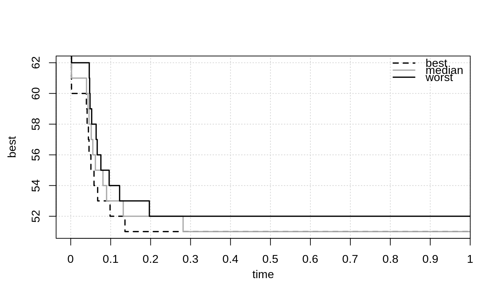
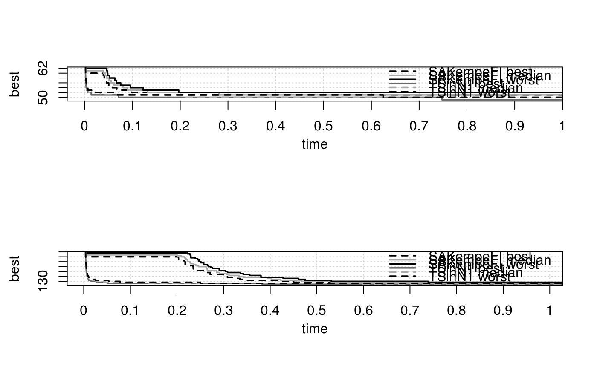
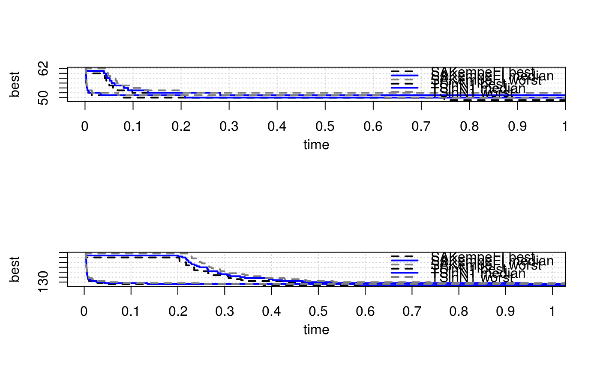
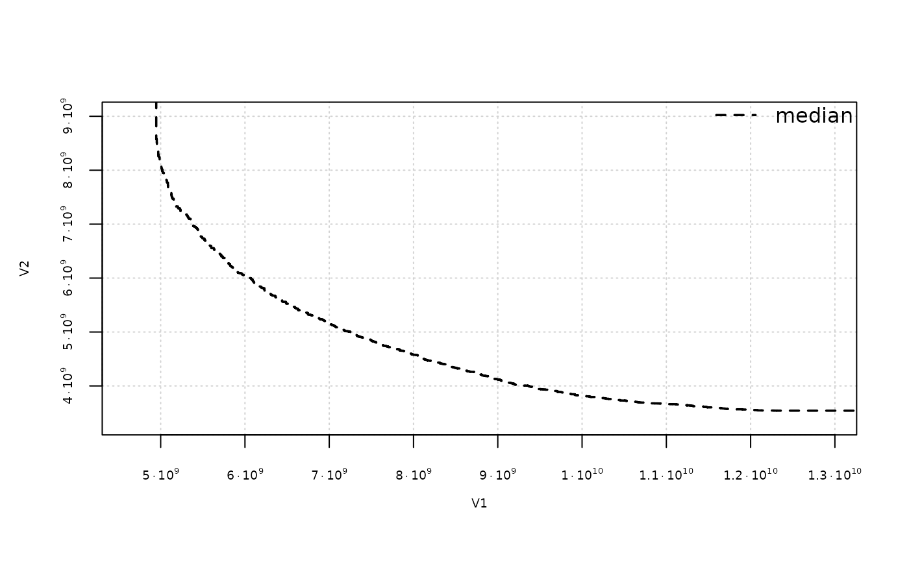
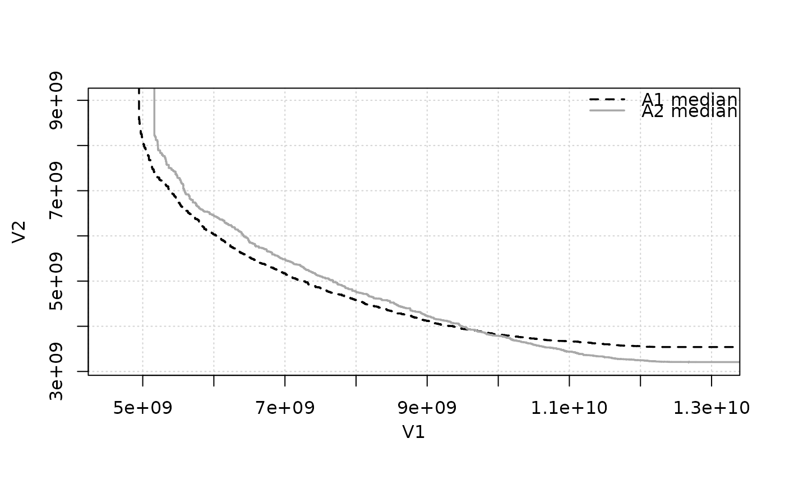
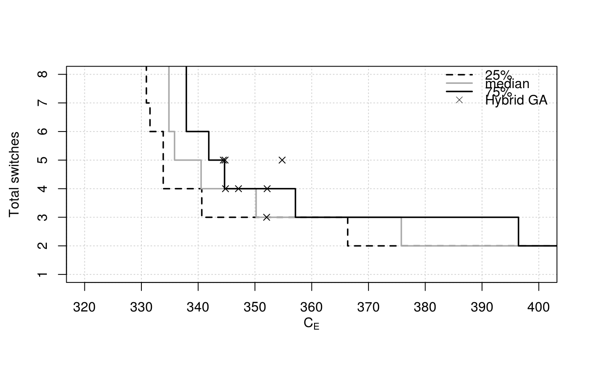
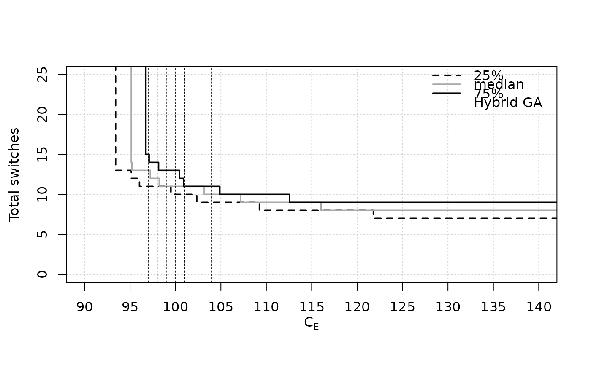
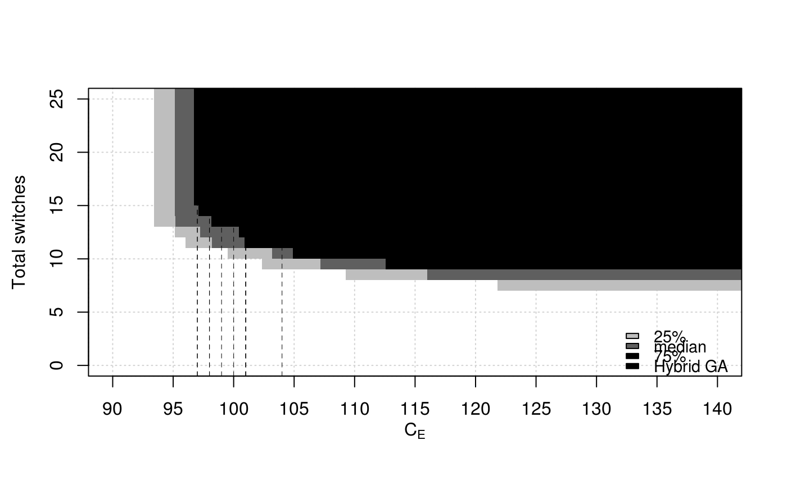
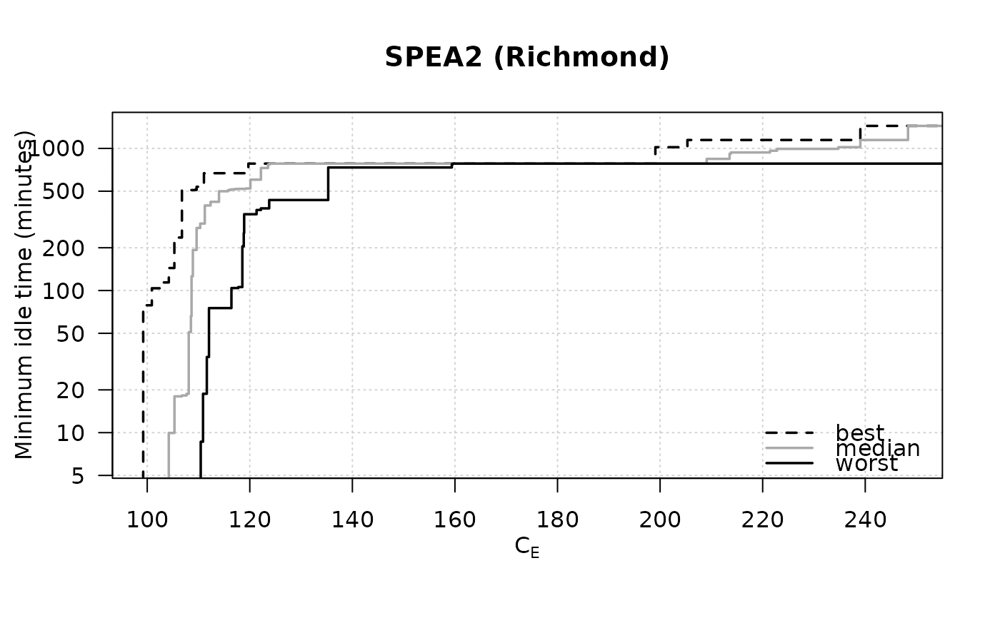

Computes and plots the Empirical Attainment Function, either as attainment surfaces for certain percentiles or as points.
eafplot(x, ...) # S3 method for default eafplot( x, sets = NULL, groups = NULL, percentiles = c(0, 50, 100), attsurfs = NULL, xlab = NULL, ylab = NULL, xlim = NULL, ylim = NULL, log = "", type = "point", col = NULL, lty = c("dashed", "solid", "solid", "solid", "dashed"), lwd = 1.75, pch = NA, cex.pch = par("cex"), las = par("las"), legend.pos = "topright", legend.txt = NULL, extra.points = NULL, extra.legend = NULL, extra.pch = 4:25, extra.lwd = 0.5, extra.lty = NA, extra.col = "black", maximise = c(FALSE, FALSE), xaxis.side = "below", yaxis.side = "left", axes = TRUE, sci.notation = FALSE, ... ) # S3 method for formula eafplot(formula, data, groups = NULL, subset = NULL, ...) # S3 method for list eafplot(x, ...)
| x | Either a matrix of data values, or a data frame, or a list of data frames of exactly three columns. |
|---|---|
| ... | Other graphical parameters to |
| sets | (numeric) |
| groups | This may be used to plot profiles of different algorithms on the same plot. |
| percentiles | (numeric) |
| attsurfs | TODO |
| xlab, ylab, xlim, ylim, log, col, lty, lwd, pch, cex.pch, las | Graphical
parameters, see |
| type | (character(1)) |
| legend.pos | the position of the legend, see |
| legend.txt | a character or expression vector to appear in the
legend. If |
| extra.points | A list of matrices or data.frames with
two-columns. Each element of the list defines a set of points, or
lines if one of the columns is |
| extra.legend | A character vector providing labels for the groups of points. |
| extra.pch, extra.lwd, extra.lty, extra.col | Control the graphical aspect
of the points. See |
| maximise | ( |
| xaxis.side | On which side that xaxis is drawn. Valid values are
"below" and "above". See |
| yaxis.side | On which side that yaxis is drawn. Valid values are "left"
and "right". See |
| axes | A logical value indicating whether both axes should be drawn on the plot. |
| sci.notation | Generate prettier labels |
| formula | A formula of the type: |
| data | Dataframe containing the fields mentioned in the formula and in groups. |
| subset | ( |
No value is returned.
This function can be used to plot random sets of points like those obtained by different runs of biobjective stochastic optimization algorithms. An EAF curve represents the boundary separating points that are known to be attainable (that is, dominated in Pareto sense) in at least a fraction (quantile) of the runs from those that are not. The median EAF represents the curve where the fraction of attainable points is 50%. In single objective optimization the function can be used to plot the profile of solution quality over time of a collection of runs of a stochastic optimizer.
default: Main function
formula: Formula interface
list: List interface for lists of data.frames or matrices
data(gcp2x2) tabucol <- subset(gcp2x2, alg != "TSinN1") tabucol$alg <- tabucol$alg[drop=TRUE] eafplot(time + best ~ run, data = tabucol, subset = tabucol$inst=="DSJC500.5")# These take time eafplot(time + best ~ run | inst, groups=alg, data=gcp2x2)eafplot(time + best ~ run | inst, groups=alg, data=gcp2x2, percentiles=c(0,50,100), cex.axis = 1.2, lty = c(2,1,2), lwd = c(2,2,2), col = c("black","blue","grey50"))extdata_path <- system.file(package = "eaf", "extdata") A1 <- read_datasets(file.path(extdata_path, "ALG_1_dat.xz")) A2 <- read_datasets(file.path(extdata_path, "ALG_2_dat.xz")) eafplot(A1, percentiles = 50, sci.notation = TRUE)## Save as a PDF file. # dev.copy2pdf(file = "eaf.pdf", onefile = TRUE, width = 5, height = 4) ## Using extra.points # \dontrun{ data(HybridGA) data(SPEA2relativeVanzyl) eafplot(SPEA2relativeVanzyl, percentiles = c(25, 50, 75), xlab = expression(C[E]), ylab = "Total switches", xlim = c(320, 400), extra.points = HybridGA$vanzyl, extra.legend = "Hybrid GA")data(SPEA2relativeRichmond) eafplot (SPEA2relativeRichmond, percentiles = c(25, 50, 75), xlab = expression(C[E]), ylab = "Total switches", xlim = c(90, 140), ylim = c(0, 25), extra.points = HybridGA$richmond, extra.lty = "dashed", extra.legend = "Hybrid GA")eafplot (SPEA2relativeRichmond, percentiles = c(25, 50, 75), xlab = expression(C[E]), ylab = "Total switches", xlim = c(90, 140), ylim = c(0, 25), type = "area", extra.points = HybridGA$richmond, extra.lty = "dashed", extra.legend = "Hybrid GA", legend.pos = "bottomright")data(SPEA2minstoptimeRichmond) SPEA2minstoptimeRichmond[,2] <- SPEA2minstoptimeRichmond[,2] / 60 eafplot (SPEA2minstoptimeRichmond, xlab = expression(C[E]), ylab = "Minimum idle time (minutes)", maximise = c(FALSE, TRUE), las = 1, log = "y", main = "SPEA2 (Richmond)", legend.pos = "bottomright")# }